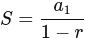

Sucesiones y progresiones
Una sucesión es una lista ordenada de números que siguen una regla o patrón. Cada número de la sucesión se llama término y se representa normalmente por an, donde n indica la posición del término.
1. Reconocimiento de patrones
Para estudiar una sucesión, lo primero es descubrir su patrón:
- Sumar o restar siempre la misma cantidad.
- Multiplicar o dividir siempre por el mismo número.
- Seguir una regla especial (como sumar los dos términos anteriores).
Reconocer el patrón permite continuar la sucesión y describirla matemáticamente.
2. Progresiones aritméticas
Una progresión aritmética (P.A.) es una sucesión en la que cada término se obtiene sumando una cantidad fija, llamada diferencia d.
Término general:
an = a1 + (n−1)⋅d
Suma de los n primeros términos:

3. Progresiones geométricas
Una progresión geométrica (P.G.) es una sucesión en la que cada término se obtiene multiplicando por un mismo número, llamado razón r.
Término general:
an = a1 ⋅ rn−1
Suma de los n primeros términos (si r≠1):
 Suma infinita:
Suma infinita:
Si ∣r∣<1, la suma de todos los términos tiene un valor finito:
4. La sucesión de Fibonacci
La sucesión de Fibonacci es una sucesión especial en la que cada término es la suma de los dos anteriores:
1, 1, 2, 3, 5, 8, …
No es una progresión aritmética ni geométrica y aparece en la naturaleza, el arte y el diseño, especialmente en forma de espirales y proporciones equilibradas.
Idea clave
Las sucesiones permiten describir patrones numéricos y ayudan a entender fenómenos matemáticos, naturales y artísticos.